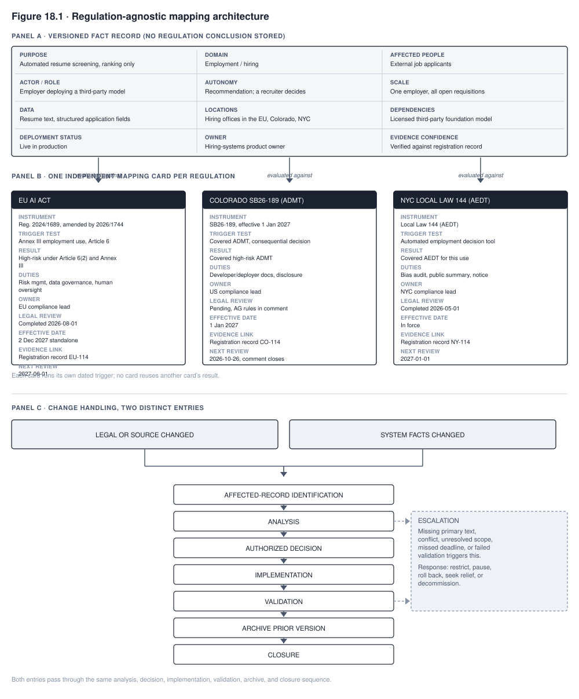

18. Governing Under Uncertainty
Chapter 2 traced the European Union’s July 2026 deferral of the AI Act’s high-risk obligations and the two planning risks that sequence exposes in any organization that treats a regulatory date as fixed. Colorado ran a sharper version of the same structural pattern at the state level, repealing and reenacting the entire framework that had set its original compliance date, and section 18.1 develops what that sharper version adds.
This chapter treats these facts as a pattern, not as this year’s news. A governance program built to a fixed regulatory calendar will keep experiencing this same failure, on some regulation, indefinitely, because the pattern is structural rather than incidental to any one law. Building a program that survives the pattern, instead of getting lucky on any single date, is this chapter’s subject. This closes the book on the discipline the reader now carries forward rather than on a snapshot of law that will have moved again before this book is old.
What you will be able to do
- Explain why a governance program built around fixed compliance dates fails, using a concrete regulatory deferral as the mechanism, not an abstract warning
- Run horizon scanning as an operating discipline built from source selection, cadence, triage, and translation of regulatory change into a tracked internal change request
- Design a classification and mapping structure that survives regulation change, connecting the practice directly to the inventory and classification work Chapter 3 established
- Name the obligations that stay stable beneath any specific regulatory framework, and describe what the AI governance field asks of the people who practice it
18.1 Why compliance calendars fail
A compliance calendar treats a regulatory date as though it were the plan itself, not one input into a plan that has to accommodate the date moving. The EU deferral shows both failure modes the same calendar produces. Over-investment against a date treated as immovable spends budget and attention finishing certification work against harmonizing standards that, in the deferral’s own telling, were the reason the date moved in the first place. Work finished early against an unready standard often has to be redone once the standard itself changes. Under-investment against a date treated as already moved before the law changed leaves an organization with no active preparation running at all during the gap between the proposed delay and its actual enactment. During that gap, the original date remained the legally operative one regardless of what everyone expected to happen to it.
Colorado’s sequence makes the same point with less ambiguity, because there the date did not merely move once. SB24-205 set a compliance date of 1 February 2026. SB25B-004 moved it to 30 June 2026. A stipulated stay then suspended enforcement before that date arrived, and SB26-189 replaced the entire framework, effective 1 January 2027, stripping out the risk management program and impact assessment requirements that had been the statute’s compliance spine. An organization that built to any one of the first two dates built toward obligations that a later date changed again. And an organization that built toward the risk-management architecture the original statute required built infrastructure a documentation-and-disclosure regulation does not ask for. Two years of preparation produced compliance readiness for a law that, in the form prepared for, never took effect.
Both failures, the EU’s and Colorado’s, share the same root cause. Both treat a regulatory date as though it carries the certainty of a plan, rather than the uncertainty of one changeable input into a plan. A plan built correctly treats the date as the best current estimate of when an obligation takes effect, revisable the moment new information arrives. The underlying governance work, the inventory, the classification, the risk assessment, the documentation, proceeds on its own schedule regardless of which specific date currently governs when it must be finished.
18.2 Horizon scanning
Horizon scanning is the operating discipline that keeps a governance program from being surprised by exactly the kind of change section 18.1 described. It needs a named owner and a defined set of actors, in addition to the structure this book has already given every other governance process. That structure has defined sources, a cadence, a triage step, and a translation of what is found into something the rest of the program can act on and eventually closes. A scanning owner collects; a qualified analyst assesses status and applicability; legal counsel owns the authoritative legal interpretation where one is needed rather than leaving that judgment to whoever read the source first. The affected system and business owners assess impact; an authorized decision-maker approves the resulting action; and, for a material change, assurance validates that closure actually happened instead of accepting a status update at face value.
Source selection means identifying a specific, finite set of places regulatory change will actually appear before it reaches general news coverage. Those places are the relevant regulator’s own rulemaking docket, legislative tracking services for jurisdictions where the organization operates, industry association bulletins, and, for frontier obligations specifically, the small number of standards bodies whose work determines when a conformity presumption becomes available at all. They also include the court docket for any litigation testing an obligation already in force. That is the source that would have surfaced Colorado’s stipulated stay directly, not the later docket that replaced the statute it stayed. Reading whatever a general news feed happens to surface is not horizon scanning; it is reacting to whatever a search algorithm decided was newsworthy, weeks after the docket entry that mattered was actually filed. Whatever a source captures, it needs to capture with the source’s own authoritative text, publisher, version, status, date, and a stable locator. A secondary summary of a rule is not the same kind of evidence as the rule itself. Section 18.3 develops why that precision matters once the source feeds a mapping card’s own trigger test.
Cadence is a risk decision, not a universal fixed interval. No single schedule catches every kind of change with enough lead time to matter. A court order, a final rule, a security directive, and a supplier’s own contract notice do not arrive on the same clock a legislative tracking service does. The right design sets a service level per source and per obligation, uses automated alerts where an authoritative source provides them, scheduled review for slower-moving sources, and event-driven escalation for court orders, final rules, incidents, and provider notices. This is different from checking every source on the same calendar regardless of how fast that particular source actually moves.
Triage is more than a two-way split between what to watch and what to act on immediately. A proposal’s own lead time can be shorter than the implementation time a response would need. A signed law, too, can turn out not to apply to the organization, the actor, the system, the territory, or the date at all. A workable triage scores each item on the authority of its source, its legal status, its applicability to what the organization actually does, and the probability it takes effect as drafted. It also scores the item’s lead time, its impact if it does take effect, its reversibility, what else depends on it, and the actual decision deadline. It then assigns the item to one of several states, not only two. Those states are watch, analyze, prepare, implement, challenge, pause, and close. A proposed bill with a short statutory lead time and a high probability of passage can legitimately land in prepare rather than watch. A signed law that plainly does not reach the organization’s own actors or systems can legitimately close without ever becoming an active change request.
Translation and the steps after it connect horizon scanning to everything else this book has built. A regulatory change that clears triage becomes a tracked change request carrying, at minimum, its owner, scope, source, legal status, applicability analysis, decision, implementation evidence, validation, and a closure date, in exactly the sense Chapter 15 already established for a requirement’s own record generally. That is different from a fact noted in an email and left to whoever happens to remember it when the next audit runs. A missed deadline, a conflicting authority, an unavailable source, a failed control, or uncertain scope escalates instead of stalling silently. Restriction, a pause, a rollback, seeking relief, or decommissioning are the actual responses available, depending on what the escalation finds. Closure records what the change revealed and updates the source list, the cadence, or the mapping structure when the case shows one of them missed something, rather than filing the outcome away unexamined. This same change record is what has to reach into the rest of the program, not terminate at the horizon-scanning desk. A change that alters a system’s applicable duties needs the same authority Chapter 17 gives to a target-model change. A change that originates in a supplier’s own notice, rather than a regulator’s, needs the vendor-relationship handling Chapter 16 already established for a supplier-initiated change. An organization building both need not unify them into a single schema; keeping the two record types separate, each cross-referencing the other, is a reasonable working choice. The Colorado sequence is a worked illustration of the complete lifecycle rather than only its translation step. A well-run horizon-scanning practice opens a change request at SB25B-004’s passage, with the bill text and its enactment date as the source, the organization’s Colorado-covered systems as the applicability, and a decision to prepare toward the amended date. It revises that request at the stipulated stay, recording that enforcement was suspended while the underlying obligation was not yet repealed, and deciding to pause implementation while keeping the assessment work already done. It then closes the original request and opens a new one at SB26-189’s enactment, recording that the prior statute was repealed and replaced and reanalyzing applicability against the new statute’s different duties. The decision is to rebuild the change record from the new statute’s actual text instead of carrying the old one forward. Each version is dated, retained, and tied to the same underlying system records. That way, a later question about what the organization believed it had to comply with, and when, has an answer traceable to a specific source and decision, rather than to memory.
18.3 Regulation-agnostic design
Chapter 3 established the mechanism this section extends. One shared fact record supports one mapping rule per applicable regulation, and each regulation’s own dated trigger is evaluated against those facts independently. No jurisdiction’s conclusion is fed into another’s rule as though it were itself a fact. What section 18.1 and section 18.2 add to that mechanism is the case it was built for. A regulation’s own trigger is not a fixed input; it is itself subject to deferral, amendment, or the kind of full repeal and reenactment Colorado’s sequence produced. Colorado’s statute, New York City’s Local Law 144, and every other regulation that might apply to the same system each define their own covered objects, actors, triggers, exclusions, and duties. Each can also change on its own schedule, without the others moving at all.

Read Figure 18.1 as three connected structures, not one. One of those structures is a fact record that never itself states a legal conclusion. Another is a set of independent mapping cards, one per applicable regulation, each running its own dated legal trigger against the same shared facts. The third is a change-handling structure that treats a legal change and a system-fact change as two separate kinds of event feeding the same downstream analysis, decision, and closure steps. A regulation changing, whether by deferral, amendment, or full repeal and reenactment as Colorado’s did, updates only that regulation’s own mapping card. The fact record does not change because the law changed. It describes what the system does and to whom, not what any particular law currently calls that. A system’s own facts changing, a new population, an added capability, a different deployment location, is the other entry into the same change-handling structure. Re-evaluating every regulation’s mapping card against the new facts, rather than assuming an old classification still holds, is what that second entry exists to force.
This is also where Chapter 2’s point about regulatory machinery connects forward. A mapping card’s trigger test has to encode a regulation’s actual statutory or annex text, not a paraphrase of it, which means someone has to have read the specific provision the card references. A card built from a paraphrase misfires the moment the regulation’s own text diverges from the shorthand an organization has been using internally. Maintaining each mapping card as a dated, versioned artifact, with its own legal-review and next-review fields, is what lets an organization answer, months or years later, exactly which obligations applied to a given system under a given regulation on a given date. That is a question section 18.2’s horizon-scanning record and this section’s mapping structure together are built to answer without reconstruction from memory.
18.4 What stays stable
Beneath the specific vocabulary of any given regulation, whether it calls a document a data protection impact assessment, an AI impact assessment, or nothing at all, a small set of reusable governance capabilities recurs across many of the frameworks this book has examined. These capabilities do not recur as identical legal duties, however. A specific regulation may require a given capability in full, require only a narrower piece of it, permit it without requiring it, or omit it entirely. This section names the capabilities themselves, instead of claiming that every regulation demands each one alike. Know what you have. An inventory, the subject of Chapter 3, is useful independently of which regulation asks for one, and several of the regulations this book has covered require it directly. Assess before deploying. An impact or risk assessment, Chapter 14’s subject, is required in some form by several frameworks and is good practice regardless of whether a specific statute names it. Test for disparate effect. Chapter 7’s fairness testing answers a question several consequential-decision frameworks ask in some form, whether the question is named algorithmic discrimination, disparate impact, or an equal-opportunity standard, though not every applicable regulation imposes a testing duty of its own. Document. Chapter 15’s evidence discipline produces a record several regulations ask an organization to produce on demand, and some regulations require considerably less documentation than others. Oversee. A human review point, Chapter 8’s subject, appears under several frameworks governing automated decisions about people, though the scope of required oversight varies by regulation and by use case. Monitor. Chapter 9’s ongoing performance and drift monitoring answers whether a system still behaves the way its initial assessment assumed, a capability few regulations mandate in that specific form but that a well-run program benefits from regardless. Respond. Chapter 10’s incident process is what several regulations’ breach or serious-incident notification duties presuppose already exists, though notification triggers, deadlines, and recipients differ by regulation.
A program built on this convergent capability set is positioned to survive a regulation changing its name for a requirement, its exact threshold, or even its entire enforcement architecture. The inventory, the assessment, the testing, the documentation, the oversight point, the monitoring, and the incident process it built stay useful infrastructure regardless of which specific regulation’s vocabulary currently describes them. This is a claim about what the capabilities make available to an organization when a regulation changes, not a documented finding about how organizations that held Colorado’s replaced statute actually fared. What such a program loses when a regulation changes is the specific vocabulary and the specific threshold, both of which the mapping structure in section 18.3 is built to absorb. What it does not lose is the underlying capability the vocabulary was describing, provided the new regulation’s own trigger is checked against that capability, not assumed to match the old regulation’s.
18.5 The profession
What this field asks of the people who practice it is a specific, uncommon combination, not any one deep specialization. Technical literacy without technical expertise means enough grasp of how a model is built, tested, and deployed to ask a developer a real question and recognize an evasive answer, without needing to be able to build the model personally. Legal literacy without legal training means enough grasp of how an obligation is structured, and enough of the actual habit of reading a statute’s own text rather than a secondary summary of it, to spot an issue and gather the relevant facts. It also means being able to draft a candidate mapping rule for section 18.3’s structure, without that draft becoming authoritative on its own. That last qualification matters on its own terms. Issue-spotting and evidence assembly are not the same activity as authoritative legal interpretation. A mapping rule needs a named, qualified legal owner, a documented review before it governs a live system, and a clear escalation and appeal path for a disputed reading, not resting on whichever practitioner drafted it first. Judgment to distinguish real risk from theater, the distinction Chapter 17 named directly and this book has returned to throughout, applies now to an entire regulatory landscape rather than to one program. The practitioner has to be able to tell a genuine new obligation from a compliance vendor’s marketing about one. Standing to say no is the fourth quality, and the rarest of the four, the one no amount of technical or legal literacy substitutes for. It is not a personal trait some practitioners happen to have, but a delegated authority an organization has to grant on record, with its own scope, review, and escalation path, before the moment it is needed. That way, a business sponsor hears that a deployment does not proceed as designed from someone the organization has actually agreed in advance can say so, instead of discovering only in the moment that no one clearly can.
Where the discipline is heading remains unsettled on more than one axis. The United States Senate stripped a proposed decade-long moratorium on state AI enforcement from a 2025 reconciliation bill by a vote of 99 to 1. That is the clearest available evidence that the question of federal preemption is contested on grounds other than party. That means an organization operating across US states cannot assume the current patchwork of state law will simplify by federal action on any predictable timeline. Colorado’s own rulemaking on its replacement statute remained in progress when this chapter was checked on 13 September 2026, with the Attorney General’s public comment period open and a revised draft still pending. Even the specific state whose sequence this chapter uses as its central example has not finished settling its own rules. A reader arriving at this book after either of those developments has resolved should treat this chapter’s account of them as a demonstration of the horizon-scanning discipline section 18.2 describes, not as a claim that the landscape has stopped moving.
18.6 From compliance to advantage
This book’s own argument, made most directly in Chapter 4 and repeated here rather than newly established, is that a governance program’s cost is best justified by preventing a system that should never have been built from consuming a year of engineering time. That happens before someone finally asks whether the system should exist. Governance that instead spends its effort documenting the right system after the fact protects the organization’s evidentiary position without preventing the more expensive failure a wrong system produces in the first place. That is this book’s rationale for where governance’s value concentrates, not a demonstrated finding independent of the argument that produced it. Stating it plainly as a rationale is worth more than dressing it in the language of competitive differentiation that the evidence available to this book does not actually support. No rigorous, generalizable finding establishes that AI governance produces a market advantage distinguishable from ordinary risk avoidance. A reader who wants that specific claim should look elsewhere for it, not to this book, which has tried throughout to say only what its sources support.
Case in focus: three systems, three years later
MEDASSIST · FAIRLEND · TALENTSCREEN · Hypothetical, following the running cases
MedAssist’s community hospital gap, the delayed sepsis alerts Chapter 10 traced to three parallel contributing factors spanning testing, monitoring, and process, prompted the remediation this book has already described. Northfield’s subsequent effort to demonstrate compliance under Chapter 15’s evidence discipline then surfaced that the underlying acceptance criteria had never actually been written down. Northfield has since written them. Whether the community hospital population’s performance now genuinely matches the academic center’s, or merely produces a cleaner-looking record than before, is a question this book cannot answer from outside Northfield’s own ongoing monitoring. Neither can Northfield’s governance function answer it with full confidence yet, since a single remediation cycle is not the same as a demonstrated pattern across the population the original gap affected.
FairLend’s boundary dispute between AI governance and model risk management, the eighteen-month process Chapter 13 traced, resolved into the working division of authority that chapter described. The division has held for the deployments that have gone through it since. Whether it holds the next time a deployment falls on the boundary, rather than cleanly on one side of it, the way Chapter 13 itself acknowledged some future case eventually will, remains untested. Meridian has not yet had one.
TalentScreen’s governance program, Chapter 17’s sequencing failure and correction, now runs a properly tiered process across all three of Calloway’s systems in that composite case. What Calloway has not yet done is extend the same tiered discipline to whatever it adds to its portfolio next. Chapter 17’s own argument was that a target operating model earns nothing by existing on paper for a system count that has already grown past it. Calloway’s inventory, per Chapter 3’s original finding, was incomplete the first time anyone actually looked for shadow AI. Nothing in this book gives a reason to believe that a single look ever finds everything, and Calloway’s next inventory sweep is not guaranteed to find nothing new either.
None of the three organizations has reached a finished state, and none should expect to. A governance program that considered any of these three resolved would be exhibiting exactly the theater Chapter 17 warned against, mistaking the absence of a currently visible problem for the absence of one.
Summary
Compliance calendars fail because a regulatory date is a changeable estimate, not a plan. Over-investing against a date treated as fixed, and under-investing against a date treated as already moved, come from the same underlying mistake. The EU’s 2026 deferral and Colorado’s repeal-and-reenactment sequence show the pattern the legal record actually documents, while what any specific organization did in response is inference, not observed finding. Horizon scanning turns the underlying risk into a manageable operating discipline with a named owner and defined actors. That discipline includes sources selected for where change actually appears first, a cadence set by risk and source volatility rather than one fixed interval, and a triage step scoring authority, applicability, probability, lead time, and reversibility into more than a simple watch-or-act split. It also includes translation of what clears triage into a tracked, dated change request carried through implementation, validation, and closure. Regulation-agnostic design keeps a stable, regulation-neutral fact record separate from each regulation’s own independently evaluated mapping card. A regulation change touches only that regulation’s card, and no regulation’s own legal conclusion, such as a “high risk” label, is treated as another regulation’s input.
Beneath any specific regulation’s vocabulary, a set of reusable governance capabilities recurs, though not as identical legal duties. They are knowing what you have, assessing before deploying, testing for disparate effect, documenting, overseeing, monitoring, and responding, each required, permitted, narrowed, or omitted differently by any given regulation. A program built on this capability set is positioned to keep that infrastructure useful when a regulation’s name, threshold, or entire enforcement architecture changes. The field asks its practitioners for technical literacy without technical expertise, and legal literacy without legal training, kept separate from authoritative legal interpretation and backed by a qualified legal owner. It also asks for judgment to distinguish real risk from theater, and for the standing to say no as a delegated authority granted in advance rather than a personal trait. More than one axis of where the discipline is heading remains unsettled. This book’s own argument is that governance earns its return primarily by preventing the wrong system from being built in the first place, a rationale worth stating plainly without dressing it as a demonstrated business case the evidence does not yet support.
Review questions
COMPREHENSION
Explain the shared root cause behind over-investing against a regulatory date treated as immovable and under-investing against a date treated as already settled before it is law.
Explain why this chapter sets horizon-scanning cadence from source volatility and risk, not a single fixed interval, and describe two triage states, beyond simply watching or acting, that a proposal or a signed law might legitimately be assigned to.
APPLIED
A system’s fact record shows an employment use case with a given autonomy, scale, and affected population. Explain why this chapter says that record should not itself store a conclusion such as “high risk,” and what changes and what does not change in the system’s governance record when a regulation governing that use case is repealed and replaced with a different framework.
Using the reusable governance capabilities this chapter names, identify which chapter of this book each capability was originally established in, and explain why a specific regulation might require, permit, narrow, or omit any one of them rather than imposing an identical duty.
SPOT THE RISK
- A governance program treats a proposed but not yet enacted regulatory delay as though compliance work against the original date can stop immediately. Identify what this chapter would say is at risk in that decision and what a properly run horizon-scanning triage step would have done differently.
COMPARE AND DECIDE
- Compare classifying a system separately under each applicable regulation against classifying it once and maintaining a mapping to each regulation’s obligations, for an organization operating across multiple jurisdictions whose laws change independently of each other, and state which approach this book favors and why.
RUNNING CASE
MEDASSISTFAIRLENDTALENTSCREENUsing the case in focus, explain why this chapter declines to describe any of the three organizations’ governance programs as finished, and what risk that description itself would create if a governance program actually believed it.
Every chapter in this book has argued, in its own subject, for the same underlying discipline. Know what a system is before deciding what to do about it. Assess before deploying. Design controls proportionate to what is actually at stake. And keep the evidence that lets the organization demonstrate, rather than merely believe, that it did. The specific laws this book has cited will have moved again by the time it is read. That discipline is what was meant to survive the move.